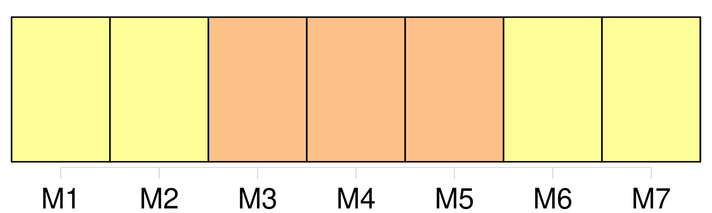
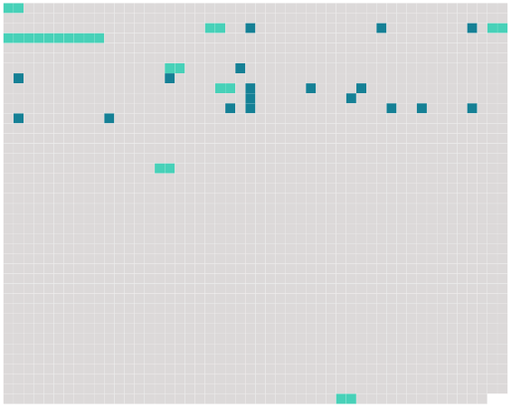

Longueur nb maillons : 25 mentions |
 |
[Les voyageurs] sont condamnés à ne voir des maisons où vieillissent les hommes sédentaires que des murs de toutes les couleurs, avec des curiosités simplement architecturales. [2 phrases] Les fenêtres sont fermées devant [les voyageurs] parce qu' [ils] se croient obligés de conseiller le départ et le voyage partout où [ils] vont : tout le monde sait naturellement qu' [ils] sont [les ennemis de ceux qui savent séjourner longtemps dans une même chambre] , les êtres sont fermés comme des globes étanches. [4 phrases] [Les voyageurs] ne possèdent plus pour assurer [leur] vie que la surface du corps, la peau avec ses organes du chaud et du froid, la vue, l'odorat, l'ouïe. [Ils] ne quittent pas le désœuvrement pour rencontrer l'amour lui -même, les femmes [leur] sont interdites. Elles ne courent pas les routes : pas de vivants plus attachés et plus patients que les femmes qui poursuivent en bougeant à peine des actions très profondes dont elles ne savent presque rien, je connais une femme qui ne sait pas qu'elle a des ovaires et qui a [des enfants] [Ils] couchent parfois avec celles qu' [ils] trouvent à portée de [leurs] mains, troublées par chance et ouvertes comme l'on dit que les juments en chaleur étaient fécondées par les vents, mais elles ne les suivent pas, elles sont trop absorbées dans leurs travaux éternels.
[Ils] ne les possèdent pas ni ne sont possédés, [ils] n'ont qu'un usufruit des corps hostiles à ces impatients. [1 phrases] [Voyageurs] , [devenez] de plus en plus vides et tremblants, malades de l'agitation de [votre] mal, [vous] aurez beau jeu de [vous] rassurer en répétant que [vous] êtes libres, que cela au moins ne [vous] sera pas enlevé. [8 phrases] [Les voyageurs] sont comme les autres tirés de toutes parts par les puissances qu'aucun objet ne satisfait, par l'amour sans amant, l'amitié sans ami, la course sans parcours, le moteur sans mouvement, la force qui n'a jamais d'actualité : il n'y a pas d'objet, de dessein, d'occasion. [40 phrases] Les plus clairvoyants [des voyageurs] se rendent compte à leur première escale de la vérité des voyages. |
 |
Il est possible de télécharger la ressource sur la page Ortolang |
Si vous avez des questions ou vous voyez des erreurs, merci d'envoyer un mail à silvia.federzoni89@gmail.com |